Мультидисциплінарний підхід · журнал «ДентАрт» 2014 №4 (77)
Філософія мукогінгівальної хірургії у поєднанні з ортодонтичним лікуванням
PHILOSOPHY OF MUCOGINGIVAL SURGERY IN COMBINATION WITH ORTHODONTIC TREATMENT
Усе частіше для повноцінного лікування в медицині стає необхідною тісна співпраця суміжних спеціалістів.
Основна мета такої співпраці — досягнення прогнозованого і стабільного результату. Тому ми повинні розглядати комплексний підхід у лікуванні, використовуючи всі наукові досягнення в хірургії, ортопедії, ортодонтії, терапії та інших галузях.
Якщо звернутися до пародонтальної пластичної хірургії, то вона включає:
- а) збільшення ширини КПЯ (кератинізованих прикріплених ясен);
- б) подовження коронкової частини зуба;
- в) закриття оголеної поверхні кореня зуба або імплантата;
- г) регенерацію сосочків;
- д) корекцію і реконструкцію втраченого альвеолярного гребеня;
- е) пародонто-ортодонтичну корекцію.
Провадити екструзію ретенованого зуба для ортодонта без допомоги хірурга не завжди можливо. Особливо гостро це питання постає при неможливості фіксації ортодонтичного елемента на коронковій частині зуба через закриття його тканинами.
Тому, володіючи техніками мукогінгівальної хірургії, можна зробити пародонто-ортодонтичну корекцію, перемістивши і зафіксувавши тканини в новому положенні. Власне, створення навколо зуба здорових і стабільних у часі тканин пародонту гарантуватиме правильність лікування. Звертаючись до літератури, ми повинні обирати таку тактику лікування, яка дозволить максимально повторити природу здорових тканин з мінімальною їх травматизацією під час хірургічного втручання.
В останні роки ми надаємо великої ваги роботі з м’якими тканинами. Візуалізація зі збільшенням за допомогою бінокулярів дозволяє прецизійніше і делікатніше працювати зі слизовою оболонкою. Мінімальна травма і адаптація після переміщення — гарантія прогнозованого і швидкого загоєння.
Розглянемо «два кити», на які слід спиратися під час планування хірургії (табл. 1):
- а) ДЕ — локалізація операції;
- б) КОЛИ — час проведення.
| ДЕ? Локалізація | КОЛИ? Час проведення |
|---|---|
| 1. У ділянці ясен тонкого фенотипу і/або рецесії: а) зуби, б) імплантати. 2. У ділянці відсутніх зубів. 3. Поглиблення переддвер’я. 4. Аберантна (укорочена) вуздечка. 5. Подовження коронкової частини зуба. 6. Відкривання непрорізаного зуба. | 1. Перед, під час або після ортодонтичного лікування. 2. Під час і/або після пародонтологічного хірургічного лікування. 3. Перед, під час або після ортопедичного лікування. 4. На етапі видалення зубів. 5. На етапі імплантологічного лікування: а) перед імплантацією; б) під час першого етапу імплантації; в) після першого етапу імплантації; г) під час другого етапу імплантації; д) перед протезуванням; е) після протезування. |
Розглянемо два клінічних випадки, вкажемо на деякі помилки і визначимо шляхи їх усунення у співпраці ортодонта з хірургом.
Діагноз першого пацієнта: ретенція зуба 11. Діагноз другого пацієнта: ретенція зуба 25.
Обом пацієнтам було запропоноване ортодонтичне лікування з хірургічним відкриванням коронкової частини зуба.
На першому етапі ортодонтії створено простір для вільного пересування зуба у відповідне місце.
Для першого пацієнта достатньо було 2-х місяців (фото 1 а, 2 а); для другого — 9 місяців (фото 1 б, 2 б).
У журналі фотографії подано у двох колонках: ПАЦІЄНТ 1 — знімки з літерою «а», ПАЦІЄНТ 2 — знімки з літерою «б».
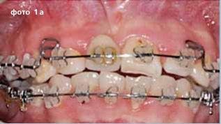
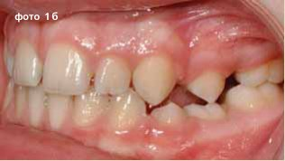
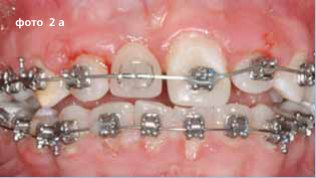
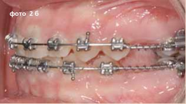
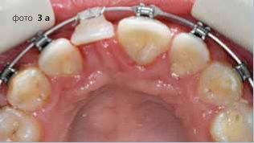
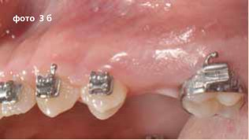
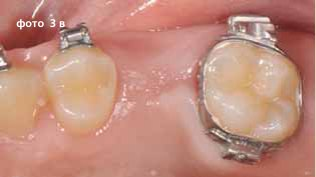
Після того як було одержано достатньо місця для пересування ретенованих зубів, необхідно провести відкриття коронкових частин зубів для фіксації на них ортодонтичних елементів апаратури. Для цього з допомогою комп’ютерної томографії було вивчено розташування зубів у трьох площинах. Це необхідно для правильного проведення розрізів і мінімалізації поверхні рани. Після узгодження плану лікування здійснювалася хірургічна частина плану (фото 3 а, 3 б, 3 в).
Ураховуючи надвисоке розташування зуба 11 у першого пацієнта, вирішено провести півмісяцевий розріз лише по перехідній складці з наступною фіксацією брекета (фото 4). Оскільки перенести клапоть з прикріпленими яснами на ніжці апікальніше коронкової частини цього зуба не вдасться, через 1-2 місяці, можливо, буде необхідне повторне мукогінгівальне втручання.
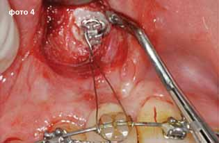
У другого пацієнта у місці непрорізаного зуба 25 було зроблено трапецієподібний розріз з вершиною, зміщеною піднебінніше (фото 5 а). Частина прикріплених ясен після розщеплення клаптя автоматично переміщалась апікальніше коронкової частини цього зуба. У ділянці проекції коронки зуба 25 проведено декортикацію з метою оголення коронки зуба і фіксацію у тому місці брекета (фото 5 б). Фіксація брекета до коронкової частини зуба 25 — на фото 6.
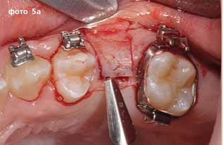
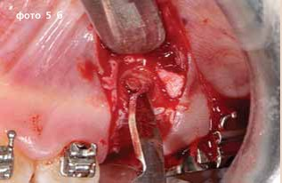
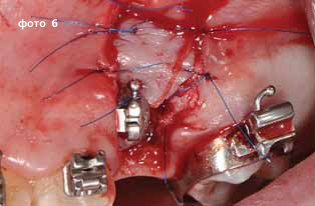
А тепер розглянемо, як будуть рухатися тканини після їхнього переміщення (фото 7 а, 7 б).
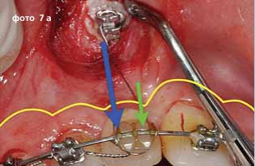
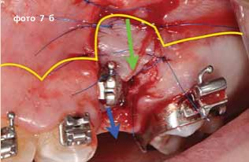
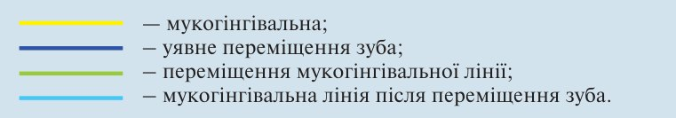
Ми можемо уявити, що після уявного переміщення зубів переміщуватися буде і мукогінгівальна лінія. У випадку першого пацієнта це призведе до майже повної втрати прикріплених ясен з вестибулярного боку зуба 11 (фото 8 а), оскільки цих тканин там практично не було. А у другого пацієнта прикріплена слизова оболонка, рухаючись за зубом екструзійно, залишиться у повному об’ємі (фото 8 б). Тому першому пацієнтові запропоновано провести повторне хірургічне лікування через 1,5-2 місяці.
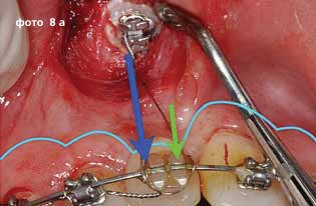
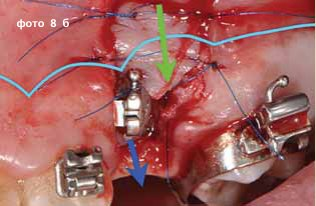
Після категоричної відмови першого пацієнта від повторного хірургічного етапу і попередження про можливі наслідки такої відмови лікування продовжив лише ортодонт (перший пацієнт через 1 місяць — фото 9 а, другий пацієнт через 6 місяців — фото 9 б).
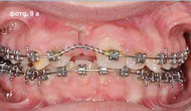
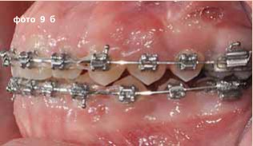
Порівняння якості отриманих м’яких тканин
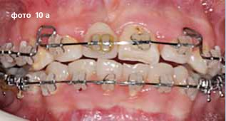
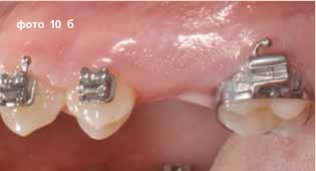
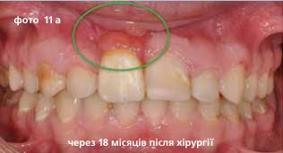
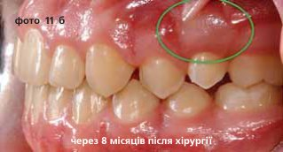
Уявна схема переміщення тканин і зуба після другого хірургічного етапу
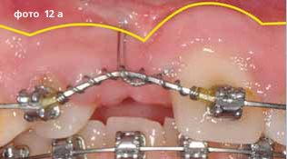
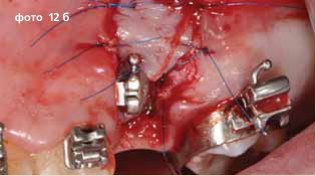
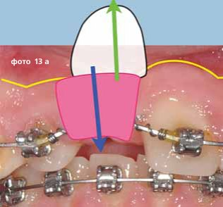
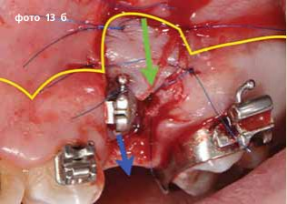
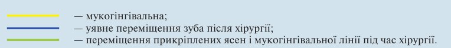
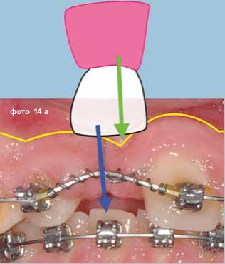
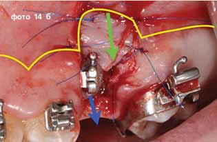
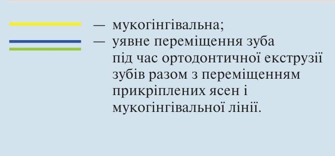
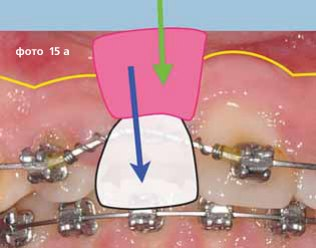
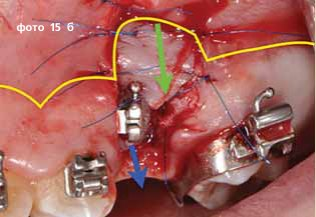
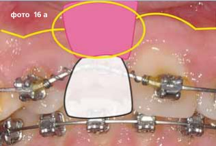
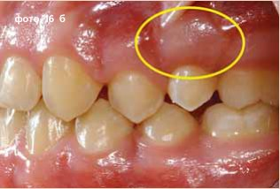
Висновок
При проведенні лікування кількома фахівцями слід чітко розуміти послідовність і тривалість кожного з етапів. Адже основною філософією такого лікування є відновлення не лише зуба, але й у цілому м’яких тканин, яких бракує. А як наслідок у першому випадку отримано тканини, недостатньо ідеальні з точки зору естетики і функції. При пасажі їжі ці тканини, не маючи достатнього прикріплення до кореня зуба і кісткової тканини, можуть бути нездатними виживати упродовж тривалого часу. Слабкість пародонту може сприяти втраті зуба в цілому. На описаних вище прикладах можна спостерігати і порівнювати кінцеві результати, і варто зазначити, що прогноз зуба 11 буде менш перспективним, ніж зуба 25.
Література
- Поняття біологічної ширини і зубоясенного комплексу за Gargiulo et al., 1961; Nevins, Skurov,1984.
- Becker W., Ochsenbein C., Tibbetts L., Becker B.E. Alveolar bone anatomic profiles as measured from dry skulls. Clinical ramifications. J Clin Periodontol 1997; 24:727-731. © Munksgaard, 1997.
- Фізіологічні параметри пародонту (Maynard JR, Wilson RD. Physiologic dimensions of the periodontium significant to the restorative dentist. J Periodontol 1979;50:170-174.
- From Rose L.F., Mealey B.L. Periodontics: Medicine, surgery, and implants, St Louis, Mosby, 2004.
- Lang N.P. & Tonetti M.S. Periodontal risk assessment (PRA) for patients in supportive periodontal therapy (SPT). Oral Health Prev Dent 2003.
- Причины дефицита тканей во фронтальном участке верхней челюсти. Perio IQ 2005 42; 3:41-63 Int J Oral Maxillofac Implants 2004;19(supl):43-61.
- Pini Prato G.P., Baccetti T., Magnani C., Agudio G. & Cortellini P. (2000 b). Mucogingival interceptive surgery of buccally-erupted premolars in patients scheduled for orthodontic treatment. I. A seven year longitudinal study. Journal of Periodontology 71, 172-181.
- Pini Prato G.P., Baccetti T., Magnani C., Agudio G. & Cortellini P. (2000 b). Mucogingival interceptive surgery of buccally-erupted premolars in patients scheduled for orthodontic treatment. II. Surgically treated versus non surgically treated cases. Journal of Periodontology 71, 172-181.
- Pontoriero R., Celenza F.Jr., Ricci G. & Carnevale M. (1987). Rapid extrusion with fiber resection: A combined orthodontic treatment modality. International Journal of Periodontics and Restorative Dentistry 5, 30-43.